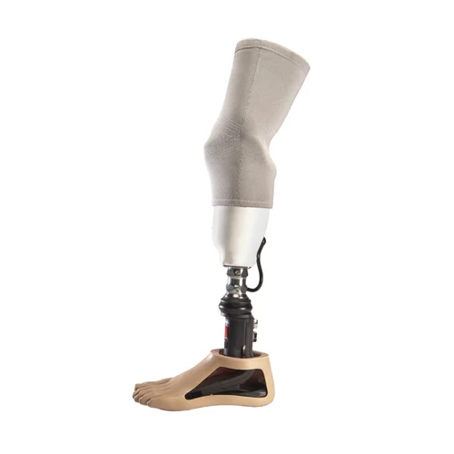
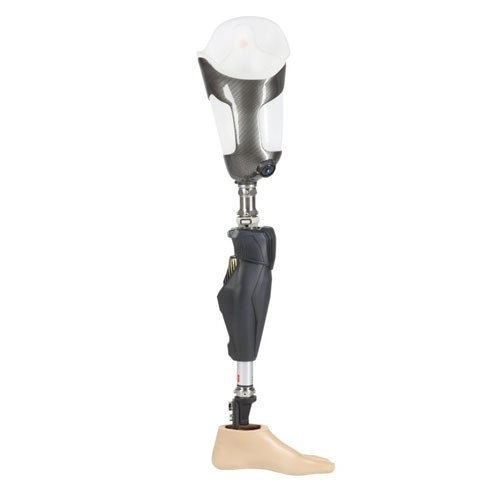
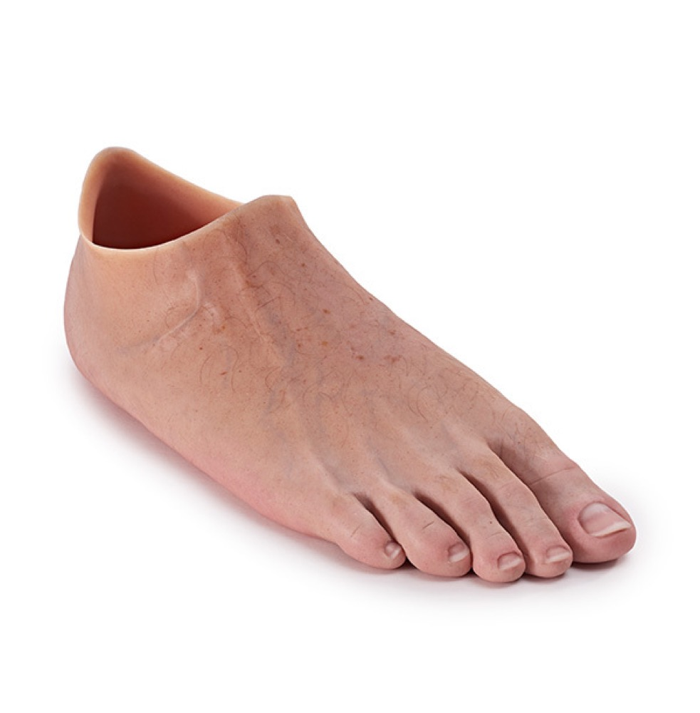
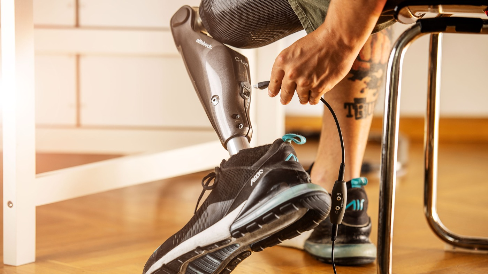
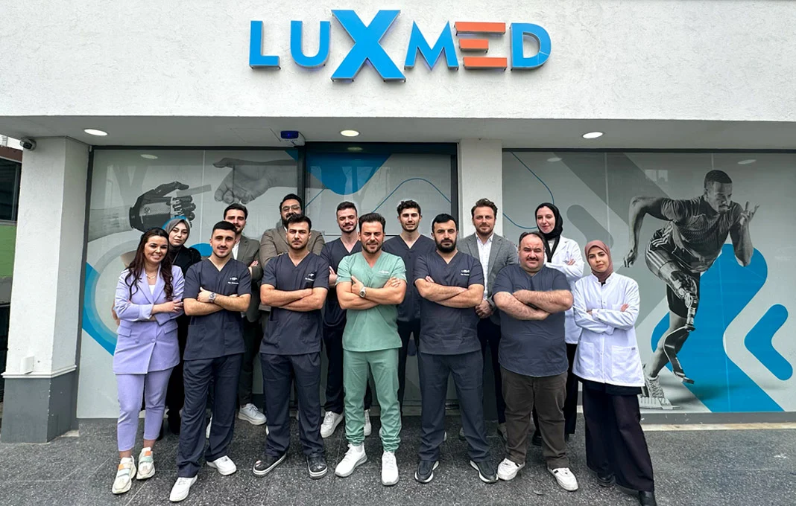
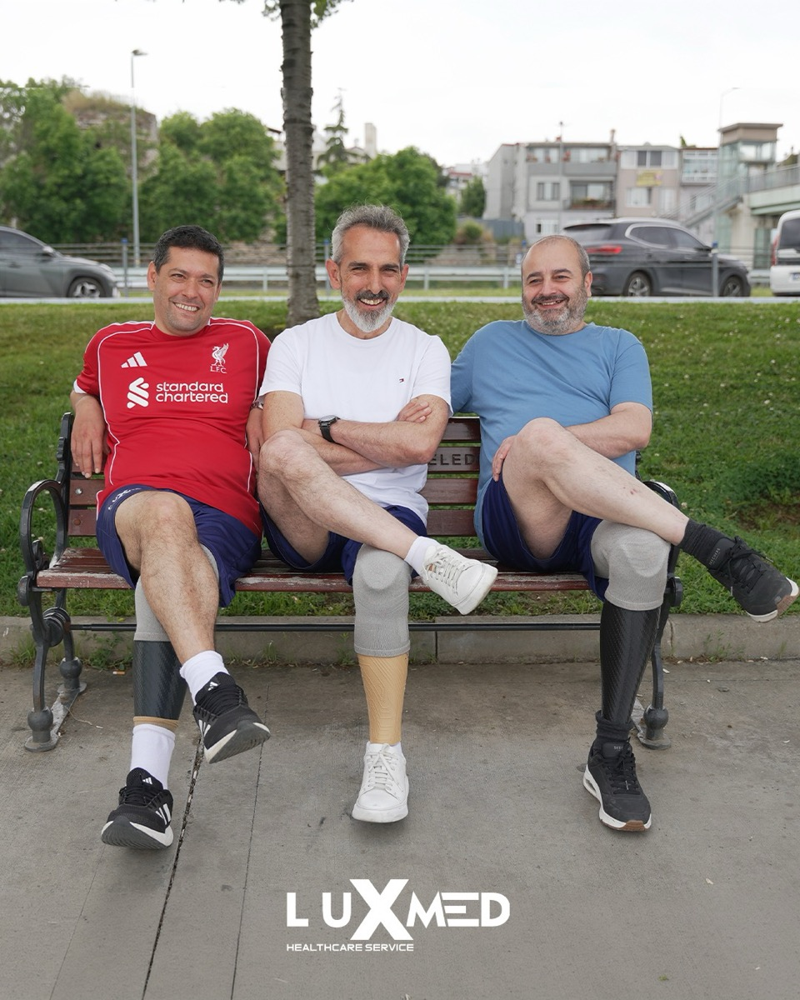
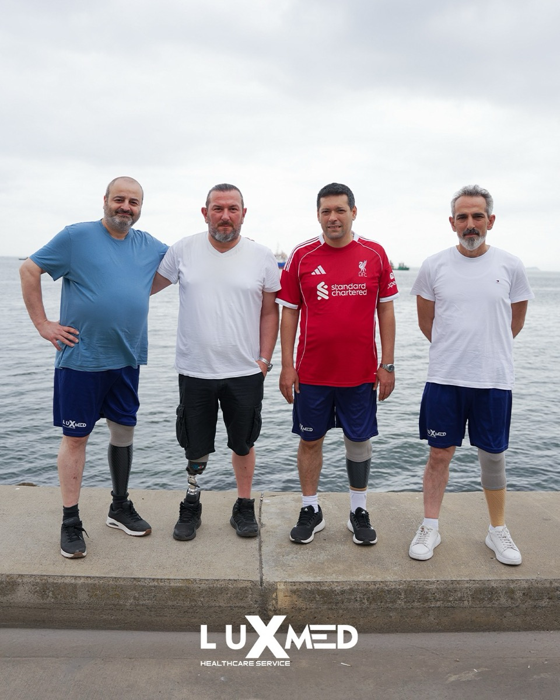

Alt ekstremite
Diz Altı
Kendi diziniz korunur, en doğal yürüyüş elde edilir. Vakumlu soketler ve hafif karbon ayaklarla gün boyu konfor.
Teklif alDiz altı, diz üstü, silikon veya biyonik bacak çözümleri
Formu doldurun, uzmanlarımızla online olarak durumunuzu ve ölçülerinizi değerlendirelim.
Uzman ekibimiz, gerekli tüm ekipmanlarla birlikte bulunduğunuz ülkeye ve şehre gelsin.
Sadece 1 günde proteziniz titizlikle takılsın ve ilk adımlarınızı bizimle atın.
Dünya genelinde binlerce hastamızın tercihi olan kişiye özel silikon protezlerimiz için Türkiye'de uzun süreler kalmanıza gerek yok. Gelişmiş üretim teknolojimiz sayesinde, sadece 24 saat içinde ölçünüzü alıyor, protezinizi üretiyor ve teslim ediyoruz.
1 Günde Değişim İçin Bilgi Al
Soket; konforun, kontrolün ve güvenin başladığı yerdir. Gelişmiş ölçü ve soket teknolojimiz, hassas ve konforlu uyumu hızlıca sağlar — seyahat eden hastalar haftalarca beklemez.
Gelin, ölçünüzü alalım ve protez bacağınızı aynı gün teslim alın — iyileşmenize ülkenizde devam edin.
Hassas ölçü ve modern soket sistemleriyle gün boyu giyebileceğiniz, güvenli ve düşük basınçlı bir uyum.
Silikon çözümlerde ölçünüzü tek seferde alıyoruz; uzun süre kalmadan ülkenize dönebilirsiniz.
1 günde uygulamaya uygun musunuz, sorun
*Aynı gün uygulama, klinik değerlendirmenize ve protez tipine bağlıdır.
Ampütasyon seviyeniz ne olursa olsun, Ottobock eğitimli ekibimiz protezinizi nasıl yaşamak, hareket etmek ve hissetmek istediğinize göre tasarlar.
Kendi diziniz korunur, en doğal yürüyüş elde edilir. Vakumlu soketler ve hafif karbon ayaklarla gün boyu konfor.
Teklif al
Mekanik ve mikroişlemcili diz seçenekleri — merdiven ve eğimde bile denge ve güven katar.
Teklif al
Parmak ve kısmi ayak kayıpları için cilt tonuna uygun, gerçekçi silikon. Tek günde ölçü, hızlı dönüş.
Silikon işçiliğini gör
Ottobock C-Leg ve Genium X3/X4 — sensörler her adıma uyum sağlar; daha güvenli, doğal ve az yorucu yürüyüş.
Biyoniği keşfetAktif bir yaşam için tasarlanan mikroişlemcili akıllı diz eklemleri, hareketlerinizi gerçek zamanlı analiz ederek anında uyum sağlar. Dünyanın en güvenilir markalarıyla, yurtdışından gelen hastalarımıza özel ekspres klinisyen desteği sunuyoruz.

Luxmed çatısı altında, alanında uzman klinisyenler, sertifikalı protez teknisyenleri ve uluslararası hasta danışmanlarımızla tek bir amaç için çalışıyoruz: Sizi en kısa sürede, en konforlu şekilde yeniden özgürlüğünüze kavuşturmak.
Yabancı hastalar için baştan sona kurgulanmış tam hizmet: ilk mesajınızdan kapıdan çıkana kadar.
Almanya'da eğitim almış uzmanlar, 2016'dan beri hassas protez uygulaması.
Havaalanı karşılama, konaklama ve klinik transferleri sizin için ayarlanır.
İngilizce, Rusça, Arapça ve Fransızca tercüman — engel yok.
Premium bileşenler, Avrupa'ya göre çok daha uygun. Önce net teklif alın.
İlk uygulamadan İstanbul sokaklarında yürümeye — hastalarımızın yolculuğunu izleyin.


“Ekip her adımda yanımdaydı. Artık günlük hayatıma güvenle döndüm ve rahatça yürüyorum.”
“Her şeyi ayarladılar — havaalanı, otel ve uygulama. Baştan sona profesyonel.”
“Mükemmel bakım ve rahat bir soket. İstanbul'da olduğum sürece kendimi güvende hissettim.”
Fiyat; ampütasyon seviyesine, seçilen diz/ayak bileşenlerine ve teknolojiye (mekanik, vakumlu, mikroişlemcili) göre değişir. Size özel net fiyatı ücretsiz ön görüşmede veriyoruz — sürpriz maliyet yok.
Havaalanı karşılama, konaklama ve klinik transferlerini biz ayarlıyoruz. Birçok hastada ölçü ve uygulama tek günde tamamlanır; tercümanlarımız (EN/RU/AR/FR) her adımda yanınızda olur.
Birçok yabancı hastada aynı gün; bazı ileri teknoloji çözümlerde birkaç gün sürebilir. Net süreyi ücretsiz değerlendirme sonrası birlikte belirliyoruz.
Diz altı, diz üstü, silikon veya biyonik — uygunluk ampütasyon seviyenize ve yaşam tarzınıza göre belirlenir. Ücretsiz ön görüşmede uzmanlarımız sizin için en doğru seçeneği öneriyor.
Daha doğal, güvenli ve az yorucu bir yürüyüş isteyen aktif kullanıcılar için uygundur. C-Leg ve Genium gibi seçenekleri değerlendirip durumunuza en uygun olanı öneriyoruz.
Formu doldurmanız ya da WhatsApp'tan yazmanız yeterli. Ekibimiz genellikle birkaç saat içinde dönüp ücretsiz ön değerlendirmenizi planlıyor.
Lütfen bilgilerinizi eksiksiz doldurun.
Talebiniz ekibimize ulaştı. Kısa süre içinde sizinle iletişime geçeceğiz. Anında yanıt için WhatsApp'tan yazabilirsiniz.
WhatsApp'ı Aç